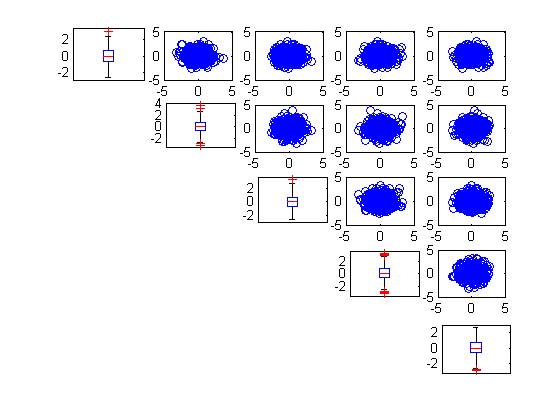

| Flexible Statistics Data Analysis Toolbox™ |
|
Univariate and bivariate outliers
[fre] = unibiv(Y)
[fre] =
unibiv(Y,param1,val1,param2,val2,...)
[fre] = unibiv(Y) has the purpose of detecting univariate and bivariate outliers.
Y is the n-by-p matrix. Rows of Y represent observations and columns represent variables.
[fre] = unibiv(Y) returns the following information
fre = n x 4 matrix.
[fre] = unibiv(Y,param1,val1,param2,val2,...) specifies one or more of the name/value pairs described in the following table.
| Parameter | Value |
|---|---|
| 'rf' |
Scalar (0<rf<1) which specifies the confidence level of the robust bivariate ellipses. The default value 0.95 that is the outer contour in presence of normality for each ellipse should leave outside 5% of the values |
| 'robscale' |
Scalar which specifies the indexes to use to compute the dispersion of each variable and the correlation among each pair of variables. If robscale=1 (default) the program uses the median correlation and the MAD as estimate of the dispersion of each variable, elseif robscale=2 the correlation coefficient among ranks is used (Spearman's rho) and the MAD as estimate of the dispersion of each variable, elseif robscale=3 the correlation coefficient is based on Kendall's tau b and the MAD as estimate of the dispersion of each variable, elseif robscale=4 tetracoric correlation coefficient is used and the MAD as estimate of the dispersion of each variableels, else the correlation and the dispersion of the variables are computed using the traditional (non robust) formulae around the univariate medians. |
| 'plots' |
Scalar, if plots is equal to 1 a plot which contains univariate standardized boxplots on the main diagonal and bivariate confidence ellipses out of the main diagonal is produced on the screen. If plots is not equal to 1 no plot is produced. As default no plot is produced. |
| 'textlab' |
Scalar. If textlab=1 and plots=1 the labels associated to the units which are univariate outliers or which are outside the confidence levels of the contours are displayed on the screen. |
| 'tag' |
String which identifies the handle of the plot which is about to be created. The default is to use tag 'pl_unibiv'. Notice that if the program finds a plot which has a tag equal to the one specified by the user, then the output of the new plot overwrites the existing one in the same window else a new window is created. |
| 'madcoef' |
Scalar. Coefficient which is used to scale MAD |
In these example we run unibiv with all default options and with plots=1.
n=500;
p=5;
randn('state', 123456);
Y=randn(n,p);
[out]=unibiv(Y,'plots',1);

|
|
triu2vec.html | upperfracpos.html |
|